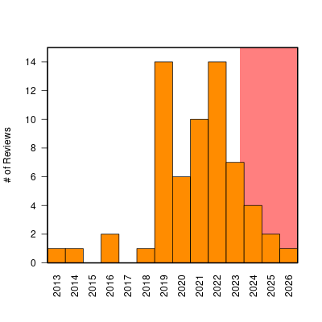
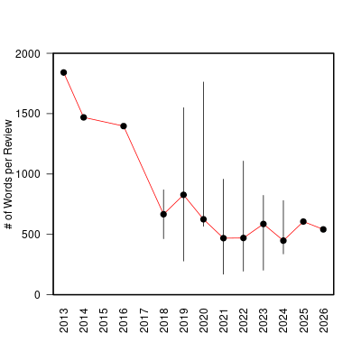
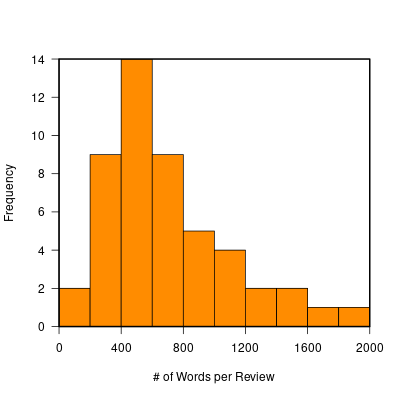
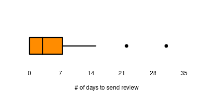

The current state of peer review and scholarly publication as a system are quite the hot button issues nowadays. This post is not meant as a hot take on them, nor a big revelation or anything, just how I feel about it or what my experience of it is or was, as an average scientist. My experience is very likely different from what some of my colleagues experience, I do not wish here to make any claims of universality about what I am feeling. At this point, I published close to 50 peer-reviewed papers and produced more than 60 reviews (mostly of articles, but also occasionally thesis and grant proposals), and as both those numbers are starting to cease to increase, I thought it was a good time to reflect on my experience. I'll start with the big one: my experience as a reviewer.
First, let me start by saying this: I love to review. It may sound strange as it is an ungrateful, unpaid and unthanked job, which few people will ever know you even did. But for me, it checks a lot of boxes: 1) while it is part of the scientific process and provides a way to give valuable scientific input on a work, there is no long term commitment, nobody expects you to follow up on it later or pour weeks of work into it: it's a once-and-done kind of job; 2) i am a fact-checker at heart, and nothing irks me more than reading a paper and realizing there are mistakes in the data (usually Excel artifacts) or that a reference given does not in fact corroborate the fact it is given in reference to, so being able to nip that one in the bud feels liberating; 3) i like helping people do the best science they can: it's not about me, it's about science.
As you would expect, being fairly obsessional, I kept track of all the reviews I did, when I did them, how long I took and what was the content, so here are a bunch of graphs:

This is the number of article reviews I did per year until now.
The red area corresponds to when I lost access to my institutional email.
 |  |
Here I am only looking at first rounds of reviews.
Second and subsequent rounds of reviews are naturally usually terser.

Apart from 2 (recent) occasions, I did manage to submit my reviews within two weeks of accepting them.
Some stuff to notice about them: 1) originally I was rarely asked to review but at some point around 2018 for some reasons people found me and I started reviewing a lot, that is Editors: if you want to contact me for a review, my email address can be found here or in any of my most recent papers.until I lost access to my institutional email following the hacking of the MfN I mentioned in other posts (while technically the mail server was reaccessible around march 2024, it was still iffy for a while and in august they moved server again at which point I did not try to gain access to it anymore, as I was only a guest at that point and didn't want to go through all the administrative hoops again); 2) when i started, i used to write (needlessly) long reviews but eventually their length settled around a median of 550 to 600 words: one thing i stopped doing in particular is spelling out all the typos and try to correct the language. Unless the meaning is ambiguous, or the typo is on highly-specialized vocabulary (such as taxonomical names), or the journal is not edited by a professional publisher, it is best left to the publisher's copy-editor in my opinion. Concerning the speed at which I do the review, it depends heavily on how interesting I found the paper naturally. Also, I used to drop everything to do the review (which explains how I managed to send reviews on the same day I accepted to do them), while nowadays I am a bit less eager. Overall, depending on the paper reviewed of course, I take between 5 and 20 effective hours to review a paper: i start by a first read, during which I take notes of the issues I see or the thing I might want to check in the literature, then I do that and start putting my notes into a proper text, then I re-read the paper to make sure my objections make sense and that I didn't forget anything. If I did, then start again from step 2. I do spend a lot of time on figures (making sure they are accurate and convey the whole story), and on supplemental material, particularly if the data or the code is given as I might actually re-run the analysis to make sure no mistakes where done in reporting the results, or double-check the data outliers and see if they make sense (a misplaced decimal point and suddenly you have a 10-meter long oyster, to give a real life example I bumped into once, which might skew the results).
On the review content: in addition to what I just said, I try to always structure my reviews as follows (which I am sure most reviewers do too). First a small (very small, just a sentence or two) summary of the paper: it might seem redundant but it shows what I took from it (which occasionally might conflict with the abstract) and how i understood it (same: if I got it completely wrong, well, maybe it should be reviewed by someone else, or maybe it is written in a way that doesn't convey the wanted information correctly). Then I try to emphacize the strengths of the paper: I don't like reading someone else's review and see a completely negative review off the bat even if the paper is mostly rubbish as the authors will either discard their paper or more likely that review, instead of trying to make a better paper which would be integrating the feedback. And receiving a full-blown negative review, in particular for an early-career researcher, is an emotional punch in the face they do not need in a work situation where their mental health is already at stake. Then I state the issue I have with the paper that warrant the advice I am giving (minor, major revision or rejection) first shortly in a couple of sentences and then as a series of detailed points, first the major issues and then the minor ones and I finish with line-by-line comments if any. And usually, if the review was a major revision or a rejection, I close with a statement that if those issues are taken care of I don t see a reason why the papers shouldn't be reconsidered or something along that line, to finish on something maybe friendlier than the comments themselves. In 60+ reviews I can think only of two papers which I didn't think were redeemable, because they were based on such a faulty premise (one of them frankly bonkers in my opinion). All the others, no matter how bad, were savageable. It's rarely the underlying data the issue, or when it is then one needs to take that into consideration and only do analyses the data permits and ackowledges its limitation. Which might ends up in a vastly different paper that the editor might not be interested in but that's not a problem that should concern a reviewer in my opinion.
A side note on MDPI: as it happens I did reviews for that publishing house (14 of them I think) ... and refused to do a lot of them too (56! of them) as they were not at all in my area of expertise. There is a lot of chatter online about that publishing house and the quality they produce so here are my two cents: as a reviewer, when I advised for rejection the paper were rejected; overall my advices were followed. But I also read the other reviewers' reviews and while some colleagues put as much effort as I did, resulting in a good, published paper, a lot of them did not. How many reviews did I read where the reviewer went something like 'This paper is publishable as is, oh, and there is a typo on line 450.' and that's it, while I wrote a 600+ words review highlighting a bunch of serious shortcomings, it's frankly heart-breaking. That issue is clearly not the fault of the publishing house (in fact I saw such reviews in other journals from other publishing houses too, I am looking at you in particular Elsevier), but the fact that those reviews are also considered as part of the final word on the manuscript, added to that the fact that I was asked to reviews a bunch of papers well outside the scope of my expertise (I'm talking chemistry papers, material science thingies, molecular biology etc. who all just happened to have the word 'silicon' or Fun fact: a lot of them where not about the algae but about di-atoms. I kid you not'diatom' somewhere in their abstract) screams to me the idea that the editorial insight is at least partly automated, which naturally is a shitty idea. So, I don't think the papers published there are fundamentally bad or lower quality, but those that are are going through the cracks more easily thanks to a badly designed system (or a system designed badly on purpose maybe, I don't know).